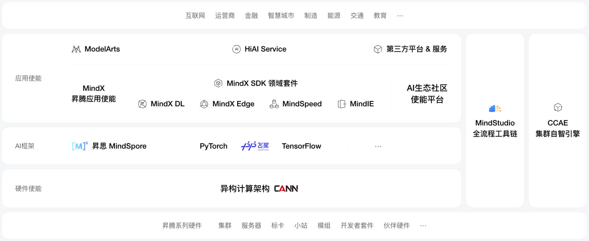
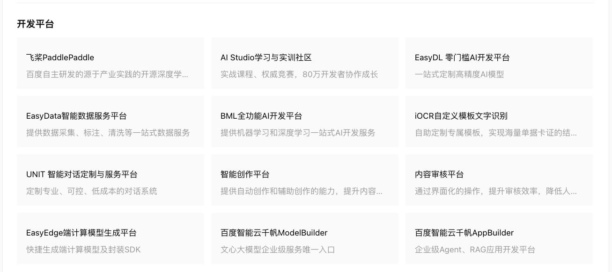
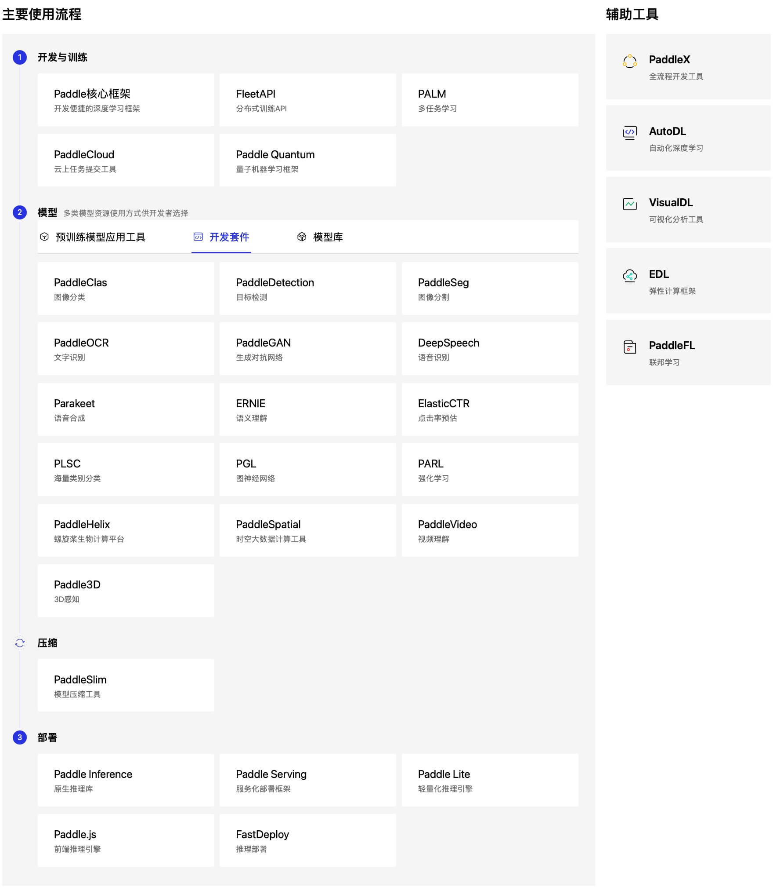
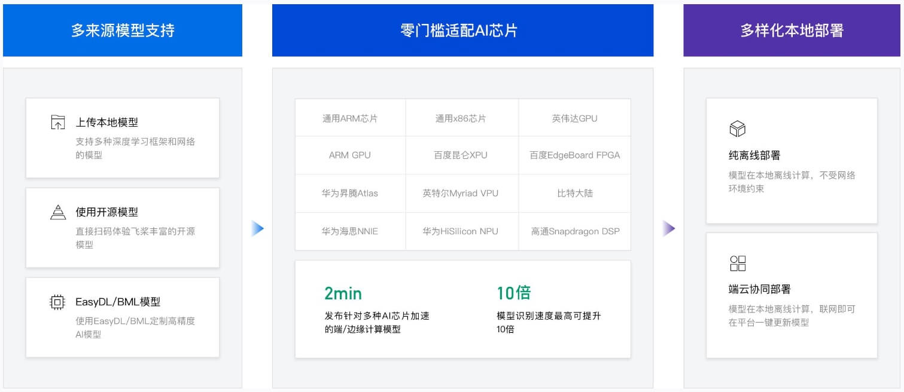

理论课程融入方案
需要将百度技术内容，融入到创新班的人才培养方案中。可分为2个部分，将百度技术内容融入到理论课程中，以及将百度技术内容融入到实验/实践课程中（会用到百度相关实验用设备）。
实验/实践课程的融入，已相对清晰。百度已提供 3款实验设备，包括文档（是什么，怎么操作，实验用于哪些知识点，等），供学院选择。本章节主要讨论在理论课程中如何融入百度技术内容的方案。
分工职责
1、百度
1.1 提供相关信息素材。
1.2 [可选] 给出融入建议。比如，建议把百度xx内容，融入到学院的xx理论课程中。
2、学院
2.1 [当前阶段] 编写将百度技术内容融入理论课程的方案（怎么融，融哪些内容）。
2.2 [后续工作] 修订创新班的人才培养方案，包括理论课程的内容调整。
2.3 [后续工作] 在部分理论课程中融入百度内容。比如，在xx理论课程中，融入百度xx内容（约 4 个课时）。
融入样例
以华为为例，有AI概览，如下：（https://www.hiascend.com/）
昇腾AI基础软硬件平台，构筑智能世界的基石 👇

百度AI概览可能如下：（https://ai.baidu.com/productlist）
百度AI产品列表 | 开发平台 👇

1、飞桨PaddlePaddle概览如下：（https://ai.baidu.com/productlist）
（位于开发平台图中的第1行、第1列）
飞桨 (PaddlePaddle)以百度多年的深度学习技术研究和业务应用为基础，集深度学习核心框架、基础模型库、端到端开发套件、工具组件和服务平台于一体，2016 年正式开源，是全面开源开放、技术领先、功能完备的产业级深度学习平台。飞桨源于产业实践，始终致力于与产业深入融合。目前飞桨已广泛应用于工业、农业、服务业等，服务 535万开发者，创造67万个模型，服务20万企事业单位，产学研用紧密协同培养超过200万AI人才，与合作伙伴一起帮助越来越多的行业完成 AI 赋能。
百度AI产品列表 | 开发平台 | 飞桨PaddlePaddle 👇

接下来可以挑几个重点的模块做介绍，比如：
1.1 开发训练 | Paddle核心框架
1.2 模型 | 开发套件 | PARL
1.3 ……
通过这种方式，就大致把飞桨PaddlePaddle讲清楚了。至于飞桨PaddlePaddle的部分能力怎么用，可以通过课后/课堂上的几个小练习，以及结合实验课/实践课中使用百度设备（+飞桨PaddlePaddle）得到训练。
当前阶段，希望百度提供以下信息，以便完成 [理论课程如何融入百度技术的方案]。
- 飞桨PaddlePaddle简介。
- 飞桨PaddlePaddle几个重点模块的简介。
- 希望是 PPT 形式。
百度还可以给出建议，飞桨PaddlePaddle相关重点模块的介绍，可以融入学院的哪些理论课程。如暂无建议也OK。当学院老师获得上述信息后，应该可以决定将哪些内容融入到哪些理论课程中。
2、EasyEdge端计算模型生成平台（https://ai.baidu.com/easyedge）
（位于开发平台图中的第4行、第1列）
EasyEdge端与边缘AI服务平台，可基于多种深度学习框架、网络结构的模型，快捷转换发布适配多种AI芯片与操作系统的端/边缘计算模型，支持纯离线计算/端云协同服务
便捷的端与边缘AI服务平台 👇

2.1 xx
2.2 xx
2.3 ……
就可以把 EasyEdge 在理论课程中讲记清楚了。怎么用，可以通过课后/课堂小练习，以及实践/实验课来实现。
小结：百度待提供信息/样例
希望通过上面描述，能够表达清楚理论课程融入百度技术的方案构想。在当前阶段，希望百度提供以下信息/素材，以便完成融入方案的编写。
1、百度人工智能全景简介。即百度人工智能有哪些东西。
2、重要/核心组成部分的简介。比如针对飞桨、千帆等的简介。
3、重要/核心组成部分的重要/核心模块的简介。比如针对飞桨，有10个重要/核心模块的简介；当前阶段还不是要在理论课程中融入具体内容，只是做融入的方案，因此可以先提供3个重要/核心模块的简介。
4、[可选] 给出指导建议：哪些内容，可以融入哪些理论课程。
通过在理论课中融入百度技术内容，以及实践/实验课中加入百度技术+百度设备的实操训练，相信创新班的同学在四年学习后，就很“百度”了，同学的科研以及就能竞争力将会得到大幅提升。
（先忽略不管）融入建议
考虑融入的百度课程
以下课程内容，将部分考虑融入现有课程。
✅EASY
RL强化学习：案例与实践
融入到：《强化学习》
本课程Datawhale出品，由上海交通大学博士生王琦、牛津大学博士生杨毅远、北京大学硕士江季共同开发，其主要内容源于三门经典的强化学习公开课：李宏毅老师的《深度强化学习》、周博磊老师的《强化学习纲要》以及李科浇老师的《世界冠军带你从零实践强化学习》，并在其基础上进行了一定的原创。课程设计者对三门公开课的精华内容进行选取并优化，并配有习题和面试题。此外，课程设计者还使用飞桨和飞桨强化学习套件PARL设计了相应的算法实战，便于充分掌握相关算法。
也是摘取数个课时的内容，融入到《强化学习》中。重点是：课程设计者还使用飞桨和飞桨强化学习套件PARL设计了相应的算法实战，便于充分掌握相关算法。
✅AI快车道PaddleNLP系列直播课
融入到：《自然语言处理》
本课程主要讲解PaddleNLP的算法原理、应用方法等技术干货；同时，也会就一些特定场景分享产业基于PaddleNLP的落地案例。旨在帮助大家快速了解PaddleNLP的最新进展、未来发展方向和使用技巧，助力开发者解决业务中遇到的难题。
可以摘取 「课节19: 22.10-PaddleNLP设计理念」中的部分内容，融入到《自然语言处理》课程中。有视频讲解，也有课件文档。
✅零基础实践深度学习（第2版）
融入到：《深度学习》
《零基础实践深度学习（第2版）》是飞桨官方出品的深度学习入门课程。由第1版课程主创人员匠心打造（累积学习人数超过9万）。本课程覆盖深度学习经典的模型和算法，理论和实践结合、产业应用和方法论结合，帮助您实现从「零基础」到领域专家的蜕变。
飞桨PaddlePadle作为和 TensorFlow、PyTorch、MindSpore等相当的深度学习框架，在该百度课程中满篇都和飞桨PaddlePaddle相关，有很多章节可引用。可在编写新版《深度学习》课件时，按需引用相关章节。
还有零基础实践深度学习-2.3版本。哪个更新就优先引用那个。
✅机器学习-李宏毅课程
融入到：《模式识别与机器学习》
百度飞桨官方携手台湾大学李宏毅教授精心准备了适合小白入门、系统性学习、免费的《李宏毅机器学习特训营》。特训营包括：中文简体字幕视频+助教研讨直播课+项目实践+丰富的GPU资源+打比赛+班主任督学 马上加入社群与上千名学员共同成长。（更新于2021-04-29）
也是通过摘取部分练习，融入到现有《模式识别与机器学习》。比如：
项目3-食物图片分类。训练一个简单的卷积神经网络，实现食物图片的分类。
✅人工智能导论：案例与实践
融入到：《人工智能导论》
本课程是浙江大学吴飞老师的著作《人工智能导论：模型与算法》的配套实验课程，由浙江大学计算机学院朱强老师和飞桨教材编写组共同撰写，同时也邀请了头部高校人工智能领域专家和博士生参与课程的撰写和审校。
共 8 课节，包括：监督学习、无监督学习、前馈神经网络、卷积神经网络、循环神经网络、深度生成学习、强化学习、深度学习应用案例。每个课节有若干个案例与实践。主要从2个方面融入：（1）可考虑加入百度人工智能综述（请百度提供相关素材）。（2）可摘取部分课节的部分案例与实践，融入到现有《人工智能导论》中。比如：
02
基于K均值算法的鸢尾花聚类实验
1.1 实验目的
理解并掌握K均值聚类算法，包括：K均值聚类过程、优化目标、迭代终止条件；
掌握数据分析的设计原理以及构建流程；
熟悉高性能数据引擎Blackhole构建K均值模型的方法。
1.2 实验内容
在现实世界中，高质量的标注数据难以获得，因此无监督学习是监督学习的必要补充。K均值算法是无监督学习中最常见的聚类算法。在本实验中将不使用标签数据，完成鸢尾花聚类任务，并对模型的性能和预测能力进行测试。
本实验将使用Blackhole的K均值模型，完成鸢尾花聚类任务，通过理论和实践结合，帮助大家更深入的理解和应用这些知识。
注：Blackhole是百度自研的高性能数据科学引擎，拥有与pandas/sklearn一致的接口，具备单机大数据处理能力，享有单机使用的便利性和媲美分布式计算的性能
暂不考虑融入的百度课程
以下课程内容相对通用，或现有课程已具备，暂不考虑融入。